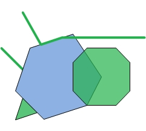
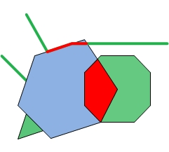
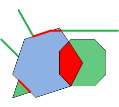

Intersection
The Intersection operator creates the set-theoretic intersection between a geometry, the intersector, and one or more other input geometries. The operator returns the intersection of each pair, the intersector and each of the input geometries.
Dimension of output geometries
The desired dimension of the output geometries can be specified through the mask
parameter. The dimension mask only pertains to output. Basically, it is 1 for points/multipoints,
2 for polylines, 4 for polygons. If we want a combination, add the mask values. For example, if we want to
get out points and polylines, the mask is 3. If we want points, polylines and polygons, the mask is 7.
We will get an empty geometry if the intersection for a particular dimension is empty. For example, if the mask is 7 but there are no polygon intersections, we will get the point intersections, the polyline intersections and an empty polygon.
For the best performance, use the appropriate mask. If we really only want polylines, set the dimension mask equal to 2, not 7. Setting the dimension mask equal to -1 implies that the returned geometry will be the lowest dimension of the intersecting pair. For example, if the intersector is a polygon and the input geometry is a polygon, the returned geometry will be a polygon. If another input geometry is a polyline, the returned geometry will be a polyline. If other dimensions are not important, a dimension mask with a value of -1 is the fastest option when intersecting polygons with polygons or polylines.
Examples
Let's look at a couple of simple examples. In the following images, the blue geometry is the intersector and the green geometries are the input geometries. The intersector is paired with each of the input geometries to output the red geometries.
|  |  |  |
 |
| Intersector and Inputs | Dimension mask = -1 | Dimension mask = 3 | Dimension mask = 6 |
Calling the Intersection operator
There are two ways to call the Intersection operator as there are two execute methods. One
of the execute methods doesn't have a mask parameter. By calling this method,
we are essentially setting the dimension mask equal to -1. Recall that this implies that the returned geometry will
be the lowest dimension of the intersecting pair.
If we are not using a dimension mask, the call looks like this:
GeometryCursor outputGeoms = OperatorIntersection.local().execute(inputGeoms, intersector, spatialRef, null);
If we are using a dimension mask, the call looks like this:
GeometryCursor outputGeoms = OperatorIntersection.local().execute(inputGeoms, intersector, spatialRef, null, mask);
where inputGeoms and intersector are of type GeometryCursor.
Then to retrieve the intersected geometries from the cursor, our code will look something like this:
Geometry geometry = null;
while ((geometry = outputGeoms.next()) != null)
{
... do something
}
Understanding the output
The number of output geometries for each input pair depends on the dimension mask. If the dimension mask is equal to -1, then there will be one output geometry for each input pair. If the dimension mask is greater than 0, then for each input pair there will be the same number of output geometries as is specified in the dimension mask. Some of the output geometries may be empty.
To better understand the output, we will look at the output generated by the application shown below. The application creates the geometries we looked at previously and calls intersection with various dimension masks. It prints out the JSON format of the output geometries.
package geometryapp; import com.esri.core.geometry.Geometry; import com.esri.core.geometry.GeometryCursor; import com.esri.core.geometry.OperatorExportToJson; import com.esri.core.geometry.OperatorIntersection; import com.esri.core.geometry.Polygon; import com.esri.core.geometry.Polyline; import com.esri.core.geometry.SimpleGeometryCursor; import com.esri.core.geometry.SpatialReference; import java.util.ArrayList; /* * This program creates an intersector polygon, two input polylines and two input * polygons. It then calls the Intersection operator with three different * dimension masks. Each time the Intersection operator is called, it pairs up * the intersector polygon with each of the input geometries. For each pair the * dimension of the output is determined by the given dimension mask. * -1 => lowest dimension of input pair * 3 => output multipoints (1) and polylines (2) (1 + 2 = 3) * 6 => polylines (2) and polygons (4) (2 + 4 = 6) */ public class IntersectionApp { public static void main(String[] args) { // Create intersector. double coords[][] = {{0,4},{2,10},{8,12},{12,6},{10,2},{4,0}}; Polygon poly = createPolygon(coords); // Create the input polylines. ArrayList<Geometry> geomList = createAllInputs(); // Create a spatial reference object for GCS_WGS_1984. SpatialReference sr = SpatialReference.create(4326); System.out.println("Intersector"); printJSONGeometry(sr, poly); System.out.println("Input Geometries"); for (Geometry geom : geomList) { printJSONGeometry(sr, geom); } // Let's try it with different dimension masks. int mask[] = {-1, 3, 6}; for (int i = 0; i < 3; i++) { SimpleGeometryCursor inGeoms = new SimpleGeometryCursor(geomList); SimpleGeometryCursor intersector = new SimpleGeometryCursor(poly); GeometryCursor outGeoms = OperatorIntersection.local().execute(inGeoms, intersector, sr, null, mask[i]); System.out.println("*******Dim mask: " + Integer.toString(mask[i]) + "*******"); // Get the geometries from the cursor and print them in JSON format. Geometry geom = null; while((geom = outGeoms.next()) != null) { printJSONGeometry(sr, geom); } } } public static ArrayList<Geometry> createAllInputs() { // Create a list of input geometries. ArrayList<Geometry> geomList = new ArrayList<Geometry>(4); // Polyline 1 double coords[][] = {{1,15},{3.5,10.5},{6.5,11.5},{18,11.5}}; geomList.add(createPolyline(coords)); // Polyline 2 double coords2[][] = {{-2,10},{1,7}}; geomList.add(createPolyline(coords2)); // Polygon 3 double coords3[][] = {{8,8},{10,10},{14,10},{16,8},{16,4},{14,2},{10,2},{8,4}}; geomList.add(createPolygon(coords3)); // Polygon 4 double coords4[][] = {{1,3},{3,1},{0,0}}; geomList.add(createPolygon(coords4)); return geomList; } public static Polyline createPolyline(double[][] pts) { Polyline line = new Polyline(); line.startPath(pts[0][0], pts[0][1]); for (int i = 1; i < pts.length; i++) line.lineTo(pts[i][0], pts[i][1]); return line; } public static Polygon createPolygon(double[][] pts) { Polygon poly = new Polygon(); poly.startPath(pts[0][0], pts[0][1]); for (int i = 1; i < pts.length; i++) poly.lineTo(pts[i][0], pts[i][1]); return poly; } public static void printJSONGeometry(SpatialReference spatialRef, Geometry geometry) { System.out.println("Type: " + geometry.getType()); // Export the geometry to JSON format to print it out. String jsonString = OperatorExportToJson.local().execute(spatialRef, geometry); System.out.println(jsonString); System.out.println(); } }
Now let's look at the output a bit at a time.
First, we just print the intersector and the input geometries so we can see the coordinates.
Intersector
Type: Polygon
{"rings":[[[0.0,4.0],[2.0,10.0],[8.0,12.0],[12.0,6.0],[10.0,2.0],[4.0,0.0],[0.0,4.0]]],"spatialReference":{"wkid":4326}}
Input Geometries
Type: Polyline
{"paths":[[[1.0,15.0],[3.5,10.5],[6.5,11.5],[18.0,11.5]]],"spatialReference":{"wkid":4326}}
Type: Polyline
{"paths":[[[-2.0,10.0],[1.0,7.0]]],"spatialReference":{"wkid":4326}}
Type: Polygon
{"rings":[[[8.0,8.0],[10.0,10.0],[14.0,10.0],[16.0,8.0],[16.0,4.0],[14.0,2.0],[10.0,2.0],[8.0,4.0],[8.0,8.0]]],"spatialReference":{"wkid":4326}}
Type: Polygon
{"rings":[[[1.0,3.0],[3.0,1.0],[0.0,0.0],[1.0,3.0]]],"spatialReference":{"wkid":4326}}
The first dimension mask is equal to -1. Because the intersector is a polygon, if the input is a polygon, then the output will be a polygon. If the input is a polyline, then the output will be a polyline. There will be one output for each input geometry.
Notice that the second output polyline is empty. This is because the intersection of the intersector polygon and Polyline 2 is a point, not a polyline. Similarly, the second output polygon is empty because the intersection of the intersector polygon and Polygon 2 is a polyline, not a polygon.
*******Dim mask: -1*******
Type: Polyline
{"paths":[[[3.5,10.5],[6.5,11.5],[8.333333333333334,11.5]]],"spatialReference":{"wkid":4326}}
Type: Polyline
{"paths":[],"spatialReference":{"wkid":4326}}
Type: Polygon
{"rings":[[[10.0,2.0],[8.0,4.0],[8.0,8.0],[9.6,9.6],[12.0,6.0],[10.0,2.0]]],"spatialReference":{"wkid":4326}}
Type: Polygon
{"rings":[],"spatialReference":{"wkid":4326}}
Next, we use a dimension mask equal to 3. This signifies that we want to find point/multipoint and polyline intersections. Therefore, we will have two output geometries for each input geometry.
Notice that the only multipoint that isn't empty is that which was output as the intersection of the intersector and Polyline 2.
*******Dim mask: 3*******
Type: MultiPoint
{"points":[],"spatialReference":{"wkid":4326}}
Type: Polyline
{"paths":[[[3.5,10.5],[6.5,11.5],[8.333333333333334,11.5]]],"spatialReference":{"wkid":4326}}
Type: MultiPoint
{"points":[[1.0,7.0]],"spatialReference":{"wkid":4326}}
Type: Polyline
{"paths":[],"spatialReference":{"wkid":4326}}
Type: MultiPoint
{"points":[],"spatialReference":{"wkid":4326}}
Type: Polyline
{"paths":[],"spatialReference":{"wkid":4326}}
Type: MultiPoint
{"points":[],"spatialReference":{"wkid":4326}}
Type: Polyline
{"paths":[[[3.0,1.0],[0.9999999999999999,3.0]]],"spatialReference":{"wkid":4326}}
Finally, we examine the results when the dimension mask is equal to 6. This time we want intersections that are polylines and polygons.
*******Dim mask: 6*******
Type: Polyline
{"paths":[[[3.5,10.5],[6.5,11.5],[8.333333333333334,11.5]]],"spatialReference":{"wkid":4326}}
Type: Polygon
{"rings":[],"spatialReference":{"wkid":4326}}
Type: Polyline
{"paths":[],"spatialReference":{"wkid":4326}}
Type: Polygon
{"rings":[],"spatialReference":{"wkid":4326}}
Type: Polyline
{"paths":[],"spatialReference":{"wkid":4326}}
Type: Polygon
{"rings":[[[10.0,2.0],[8.0,4.0],[8.0,8.0],[9.6,9.6],[12.0,6.0],[10.0,2.0]]],"spatialReference":{"wkid":4326}}
Type: Polyline
{"paths":[[[3.0,1.0],[0.9999999999999999,3.0]]],"spatialReference":{"wkid":4326}}
Type: Polygon
{"rings":[],"spatialReference":{"wkid":4326}}